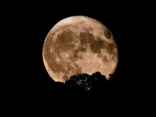
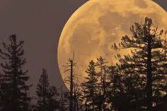

29 de marzo
Eclipse parcial de Sol, observable en gran parte de América del Sur.
En este evento, la Luna cubrirá parcialmente el disco solar, ofreciendo una vista parcial del eclipse.

7-8 de septiembre
Eclipse total de Luna, visible en América del Sur.
Similar al evento de marzo, la Luna se teñirá de rojo al pasar por la sombra terrestre.

22 de abril
Máximo de las Líridas.
Esta lluvia de meteoros es conocida por producir meteoros brillantes y rápidos, con una tasa promedio de 10 a 20 meteoros por hora en condiciones óptimas.

6 de mayo
Máximo de las Eta Acuáridas.
Asociada con el cometa Halley, esta lluvia puede producir hasta 30 meteoros por hora en el hemisferio sur.

13-14 de diciembre
Máximo de las Gemínidas.
Considerada una de las lluvias de meteoros más prolíficas, las Gemínidas pueden ofrecer hasta 120 meteoros por hora en su pico.

7 de octubre
La Luna estará en su fase llena y en el punto más cercano a la Tierra en su órbita (perigeo), lo que la hará parecer más grande y brillante de lo habitual.

5 de noviembre
Otra superluna, ofreciendo una oportunidad adicional para observar nuestro satélite natural en todo su esplendor.
